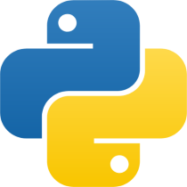
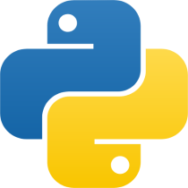
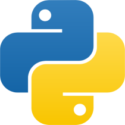

What I Study
 

Cho Yun Seo
Current Time :
What I Study

안녕하세요, 성실한 개발자가 되기위해 노력하는 조윤서입니다.
부산소프트웨어마이스터고등학교 3기 학생입니다.
2007.01.24 출생
2020.02.06 부곡초등학교 졸업
2023.02.09 금양중학교 졸업
2023.03.02 부산소프트웨어마이스터고등학교 입학


Number : 010-5095-4776
E-mail : cys070124@gmail.com